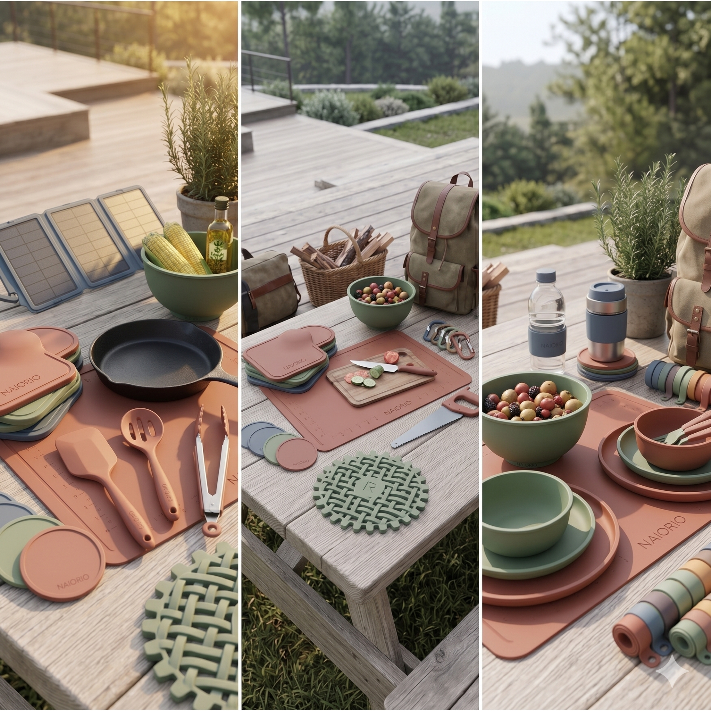
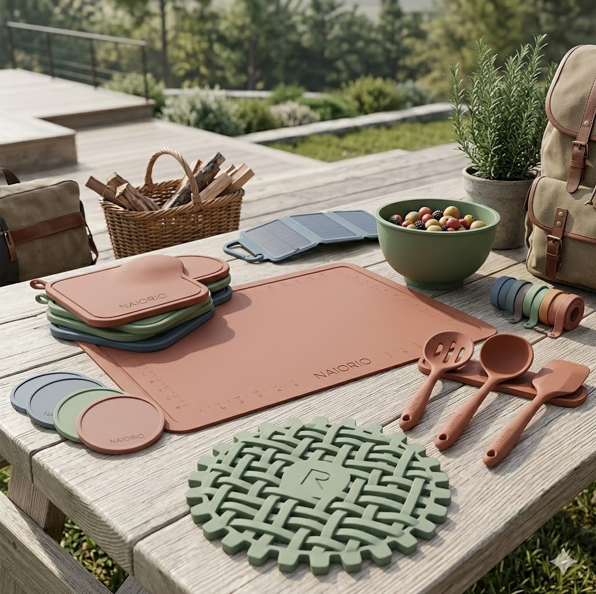
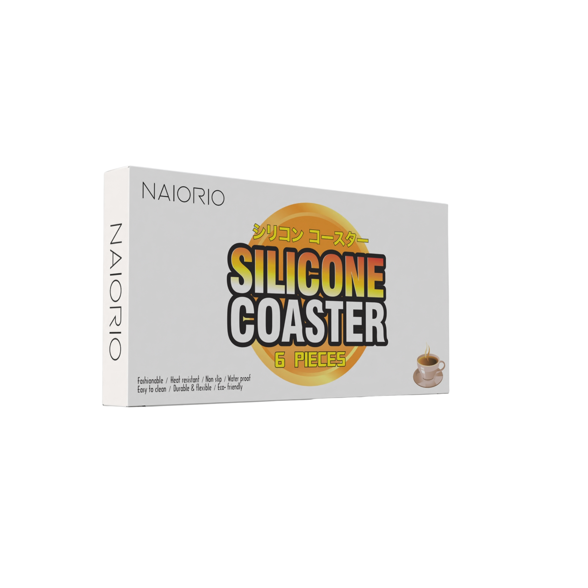
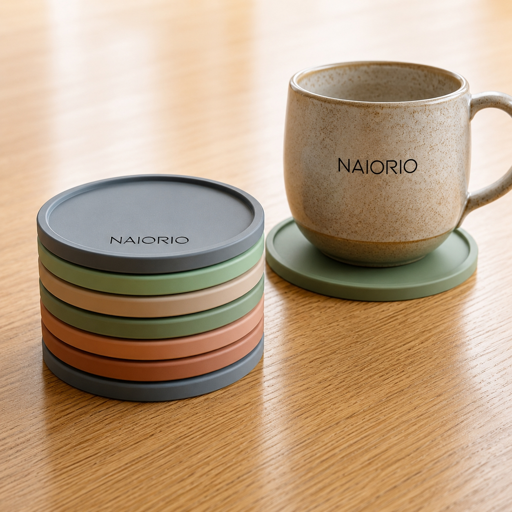
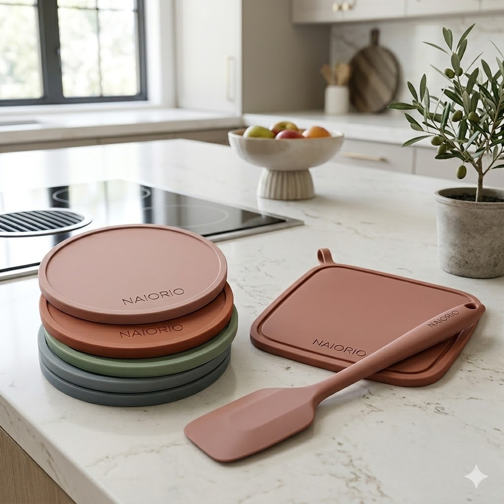
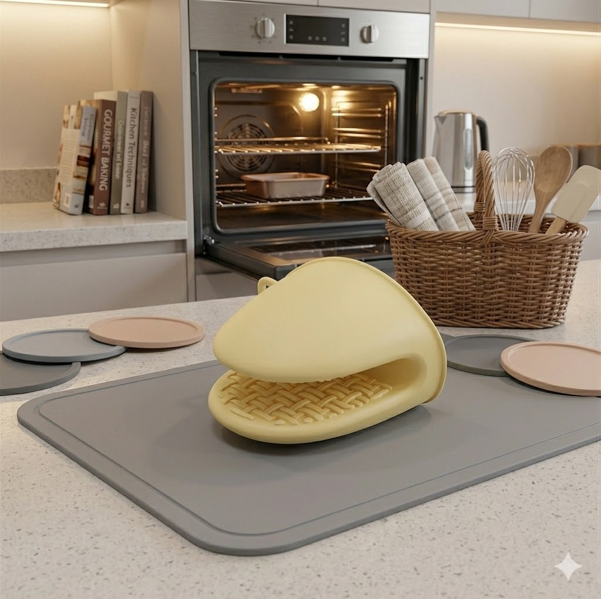
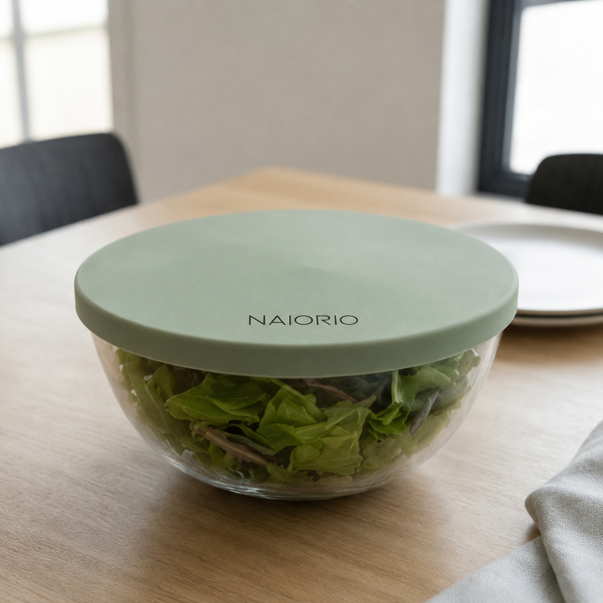

WYAX Co., Ltd. は、現代の生活環境に最適化された日常用品および厨房用品の生産と開発に特化しています。私たちは長年にわたり培った高度な制造技術と厳格な品質管理体制を基盤とし、使う人の視点に立った高品質な製品を世界市場へ供給しています。素材の選定から最終的な仕上げに至るまで一切の妥協を許さず、お客様の日々の生活の質を確実に向上させることを企業目的としています。
WYAX Co., Ltd. focuses strictly on the production, engineering, and global development of contemporary household merchandise and advanced kitchenware assets. Utilizing years of manufacturing expertise and rigorous quality control protocols, we deliver premium-grade solutions built directly from the consumer's perspective. From initial raw material selection to final refining phases, we refuse to compromise, steering our corporate purpose toward enhancing global living standards and domestic utility.
住空間に自然に溶け込み、日常の家事や調理作業をよりシンプルで効率的なものへと変えていく。私たちが製造する製品の一つひとつには、確かな耐久性と徹底された安全基準が注ぎ込まれています。変化し続けるライフスタイルに寄り添い、常に一歩進んだ実用的な価値を提供し続けることが、私たちの持続的な使命です。
Our products integrate flawlessly into any living environment, transforming routine tasks and cooking structures into streamlined, highly efficient movements. Every item leaving our line is embedded with structural durability and fully certified safety metrics. By aligning with evolving international trends, our enduring mission remains to inject practical value and continuous innovation into the modern household ecosystem.

高度にシステム化された製造ラインにより、原材料の特性を最大限に活かした均一で信頼性の高い製品生産を行います。グローバルな安全基準を満たすための自社内品質試験をクリアした製品のみを出荷し、安定した供給力と卓越した製品精度を常に維持しています。
Our structured manufacturing architecture ensures uniform, highly reliable output that optimizes raw material specifications. We exclusively clear items that pass internal testing protocols aligned with global regulations, securing sustainable distribution capacity, precision finishes, and trusted operational long-term utility.
実際のキッチンや収納現場における細かな動線を分析し、形状や寸法の微調整を重ねることで、実際の使用時において最もストレスのない構造を設計しています。一時的な流行にとらわれず、実用性と機能性を最優先した誠実なものづくりを徹底しています。
By analyzing real-world workflows in modern kitchens and storage configurations, we implement iterative layout updates regarding geometry and dimensions to provide fluid, stress-free user interactions. We bypass temporary industry trends, remaining focused on authentic practicality and enduring structural honesty.
私たちが追求するのは、華美な装飾で飾られた道具ではなく、日々の暮らしのなかに完全に同化する実直な器具の製造です。日常用品や厨房用品は、生活の基盤を支える重要なインフラであるという認識のもと、使うたびに絶対的な安心感をもたらす確かな品質と、空間を阻害しない洗練された実用美の融合を常に目指しています。
Our focus rejects decorative elements, choosing instead to engineer honest, minimalist utilities that align completely with your physical household flow. Viewing kitchenware and daily tools as essential infrastructure for domestic life, we pursue a perfect balance where absolute material safety merges with a clean, unobtrusive aesthetic that honors the space it occupies.
製品の寿命を極限まで延ばし、安全性を徹底的に高めること。それによって無駄な消費を抑え、結果としてお客様の住空間と時間の過ごし方を、よりシンプルで贅沢なものへと変革させていく。この明確な思想が、設計から梱包に至るまでのすべてのプロセスを貫く共通の設計指針となっています。
By maximizing product operational lifespans and refining elemental safety configurations, we assist in lowering wasteful turnover. This direct methodology empowers households to upgrade their environments into cleaner, distraction-free zones. This structural philosophy serves as our unifying blueprint from early layout processing to final transport casing.
高度な安全性、耐久性、そして機能的合理性を追求したプロダクトは、日常の家事負担を大幅に軽減し、より豊かなライフスタイルの基盤を作ります。
Products integrated with supreme safety, rigorous endurance, and optimal geometric rationality reduce everyday domestic friction, building a concrete baseline for premium lifestyles.


NAIORIO（ナイオリオ）は、確かな製造技術を背景に、日常の家庭環境へ圧倒的な信頼性と上質な一体感をもたらすために誕生した、WYAX Co., Ltd. の基幹オリジナルブランドです。現代の家事動線におけるあらゆる課題を解決するため、実用的な素材工学と時代に左右されない普遍的な造形美を組み合わせた製品を提案しています。
NAIORIO is the primary proprietary brand cultivated by WYAX Co., Ltd., engineered to introduce absolute operational trust and seamless integration into modern home settings. To resolve common operational pain points in daily domestic workflows, we deploy a sophisticated marriage of practical material engineering and timeless, geometric form.
厳選された高密度シリコン素材をコア技術として採用し、極めて高い耐熱性、優れた防滑性、そして過酷な使用環境に耐えうる耐久性を実現しました。直接食品に触れる調理器具などの高度な安全性が求められる製品群から、居住空間を美しく整える非食品接触類の多機能収納ツールにいたるまで、一貫した製造哲学のもとで生産されています。暮らしをよりクリーンに、より機能的に変革する次世代の基準がここにあります。
Our collection centers heavily around high-density, certified silicone compounds, yielding maximum thermal resistance, optimized anti-slip security, and resilience under constant hard labor. Spanning from food-contact essentials requiring rigorous compliance checks to versatile storage items and non-food contact wares designed to organize spaces, every item reflects a singular manufacturing standard. This is the new standard constructed to elevate your complete living standard.




| 会社名 | Company Name | WYAX Co., Ltd. | |
|---|---|---|---|
| 本社所在地 | Registered Address | 〒169-0075 東京都新宿区高田馬場１−３１−８ | 1-31-8, Takadanobaba, Shinjuku, Tokyo, 169-0075, Japan |
| 電話番号 | Telephone | 070-3519-6183 | +81 (0)70-3519-6183 |
| Eメール | Email Address | info@wyax.jp | |
| 公式サイト | Official Website | www.wyax.jp |
WYAX Co., Ltd. は、高品質な生活雑貨・家庭用品の製造、国際貿易、およびプライベートブランドの開発をコアビジネスとして展開しています。私たちは、各地域の文化や生活様式に深く根ざした実用的な価値を見極め、それを確かな製造技術によって具現化し、世界各地へ安定的に届けるサプライチェーンを確立しています。
WYAX Co., Ltd. operates at the intersection of specialized home-goods fabrication, strategic international trade, and proprietary brand cultivation. We identify pragmatic values rooted within regional lifestyles, actualize them via advanced manufacturing assets, and maintain a seamless global supply chain network spanning cross-border custom pathways.
私たちは単なる商品の流通にとどまらず、素材のイノベーションや環境配慮型設計を通じて、持続可能で高品質なライフスタイルをトータルにサポートできるグローバル企業への成長を目指しています。世界中のパートナー企業との強固な信頼関係のもと、確かな満足を約束する製品開発に邁進してまいります。
Beyond elementary logistics, our structural goal targets long-term ecological compliance and material innovation. We continuously solidify our framework alongside premier global affiliates, allocating our research toward progressive, deeply satisfying consumer products that shape tomorrow's domestic paradigm.